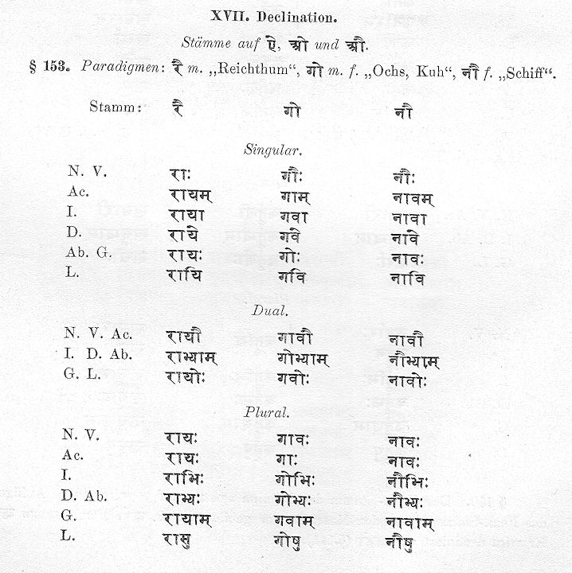
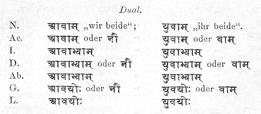
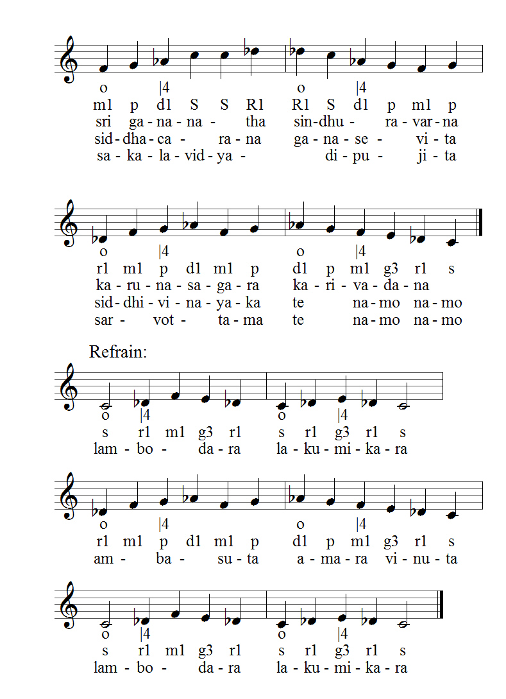

Zitierweise | cite as:
Payer, Alois <1944 - >: Sanskritkurs. -- 61. Lektion 61. -- Fassung vom 2009-04-11. -- URL: http://www.payer.de/sanskritkurs/lektion61.htm
Erstmals hier publiziert: 2009-03-09
Überarbeitungen: 2009-04-11 [Ergänzungen]
Anlass: Lehrveranstaltungen 1980 - 1984
©opyright: Dieser Text steht der Allgemeinheit zur Verfügung. Eine Verwertung in Publikationen, die über übliche Zitate hinausgeht, bedarf der ausdrücklichen Genehmigung des Verfassers
Dieser Text ist Teil der Abteilung Sanskrit von Tüpfli's Global Village Library
Falls Sie die diakritischen Zeichen nicht dargestellt bekommen, installieren Sie eine Schrift mit Diakritika wie z.B. Tahoma.
Die Devanāgarī-Zeichen sind in Unicode kodiert. Sie benötigen also eine Unicode-Devanāgarī-Schrift.
| Vor vokalischen Endungen hat der
Stammvokal in den schwachen Kasus die Schwundstufe Ø. Die Deklination im Maskulinum und Femininum ist identisch. |
Paradigma:
विश्वपा m.f. "das All beschützend"
एकवचनम् द्विवचनम् बहुवचनम् प्रथमा /
आमन्त्रितम्विश्वपास् विश्वपौ विश्वपास् द्वितीया विश्वपाम् विश्वपस् तृतीया विश्वपा विश्वपाभ्याम् विश्वपाभस् चतुर्थी विश्वपे विश्वपाभ्यस् पञ्चमी विश्वपस् षष्ठी विश्वपोस् विश्वपाम् सप्तमी विश्वपि विश्वपासु
| Vor vokalischer Endung wird -ī durch -iy
ersetzt. Neben den Bildungen mit den regulären Kasusendungen kommen im Dat.Ab.Gen.Lok.sg. und Gen.pl. auch Bildungen nach dem Muster mehrsilbiger Feminina auf -ī (देवी) vor. |
Paradigma:
धी f. "Gedanke"
एकवचनम् द्विवचनम् बहुवचनम् प्रथमा /
आमन्त्रितम्धीस् धियौ धियस् द्वितीया धियम् तृतीया धिया धीभ्याम् धीभिस् चतुर्थी धिये / धियै धीभ्यस् पञ्चमी धियस् / धिया्स् षष्ठी धियोस् धियाम् / धीनाम् सप्तमी धियि / धियाम् धीषु
Unregelmäßig: स्त्री f. "Frau"
एकवचनम् द्विवचनम् बहुवचनम् प्रथमा स्त्री स्त्रियौ स्त्रियस् द्वितीया स्त्रियम् / स्त्रीम् स्त्रियस् / स्त्रीस् तृतीया स्त्रिया स्त्रीभ्याम् स्त्रीभिस् चतुर्थी स्त्रियै स्त्रीभ्यस् पञ्चमी स्त्रियास् षष्ठी स्त्रियोस् स्त्रीणाम् सप्तमी स्त्रियाम् स्त्रीषु आमन्त्रितम् स्त्रि स्त्रियौ स्त्रियस्
Abb.: स्त्रियः
[Bildquelle: World Bank / Curt Carnemark. --
http://www.flickr.com/photos/worldbank/2241690863/. -- Zugriff am
2009-03-06. --
Creative
Commons Lizenz (Namensnennung, keine kommerzielle Nutzung, keine
Bearbeitung)]
| Vor vokalischen Endungen wird -ī durch -y
ersetzt, wenn ihm nur ein
zur Wurzel gehörender Konsonant vorausgeht. Gehen mehrere zur Wurzel
gehörende Konsonanten voraus, wird das -ī vor vokalischer Endung
durch -iy ersetzt. Die Deklination ist im Maskulinum und Femininum identisch. Unregelmäßigkeit: Komposita auf -नी
"führend" haben im Lok.sg die Endung -ām (wie देवी): |
Paradigmen:
शुद्धधी m., f. "Reines denkend"
एकवचनम् द्विवचनम् बहुवचनम् प्रथमा /
आमन्त्रितम्शुद्धधीस् शुद्धध्यौ शुद्धध्यस् द्वितीया शुद्धध्यम् तृतीया शुद्धध्या शुद्धधीभ्याम् शुद्धधीभिस् चतुर्थी शुद्धध्ये शुद्धधीभ्यस् पञ्चमी शुद्धध्यस् षष्ठी शुद्धध्योस् शुद्धध्याम् सप्तमी शुद्धध्यि शुद्धधीषु
यवक्री m., f. "Gerste kaufend"
एकवचनम् द्विवचनम् बहुवचनम् प्रथमा /
आमन्त्रितम्यवक्रीस् यवक्रियौ यवक्रियस् द्वितीया यवक्रियम् तृतीया यवक्रिया यवक्रीभ्याम् यवक्रीभिस् चतुर्थी यवक्रिये यवक्रीभ्यस् पञ्चमी यवक्रियस् षष्ठी यवक्रियोस् यवक्रियाम् सप्तमी यवक्रियि यवक्रीषु
| Stamm vor Vokal: -uv Deklination analog zu den femininen Wurzelnomina auf -ī |
Paradigma:
भू f. "Erde"
एकवचनम् द्विवचनम् बहुवचनम् प्रथमा /
आमन्त्रितम्भूस् भुवौ भुवस् द्वितीया भुवम् तृतीया भुवा भूभ्याम् भूभिस् चतुर्थी भुवे / भुवै भूभ्यस् पञ्चमी भुवस् / भुवास् षष्ठी भुवोस् भुवाम् सप्तमी भुवि / भुवाम् भूषु
| Vor vokalischen Endungen wird -ū durch -v
ersetzt, wenn ihm nur ein
zur Wurzel gehörender Konsonant vorausgeht. Gehen mehrere zur Wurzel
gehörende Konsonanten voraus, wird das -ū vor vokalischer Endung
durch -uv ersetzt. Die Deklination ist im Maskulinum und Femininum identisch. |
Paradigma:
खलपू m., f. "die Scheune kehrend"
एकवचनम् द्विवचनम् बहुवचनम् प्रथमा /
आमन्त्रितम्खलपूस् खलप्वौ खलप्वस् द्वितीया खलप्वम् तृतीया खलप्वा खलपूभ्याम् खलपूभिस् चतुर्थी खलप्वे खलपूभ्यस् पञ्चमी खलप्वस् षष्ठी खलप्वोस् खलप्वाम् सप्तमी खलप्वि खलपूषु
Abb.: रथ्याप्वः
काशीपुर
[Bildquelle: Sumit. --
http://www.flickr.com/photos/sumit/107861850/. -- Zugriff am 2009-03-09. --
Creative
Commons Lizenz (Namensnennung, keine kommerzielle Nutzung, share alike)]]
| Mehrsilbige Feminina auf -ū werden analog zu mehrsilbigen Stämmen auf -ī (देवी) dekliniert, sie enden aber im Nom. sg. auf -s. |
Paradigma:
वधू f. "junge Frau, Braut"
एकवचनम् द्विवचनम् बहुवचनम् प्रथमा वधूस् वध्वौ वध्वस् द्वितीया वधूम् वधूस् तृतीया वध्वा वधूभ्याम् वधूभिस् चतुर्थी वध्वै वधूभ्यस् पञ्चमी वध्वास् षष्ठी वध्वोस् वधूनाम् सप्तमी वध्वाम् वधूषु आमन्त्रितम् वधु वध्वौ वध्वस्
Abb.: वध्वौ
जोधपुर
[Bildquelle: thebigdurian. --
http://www.flickr.com/photos/thebigdurian/2200364164/. -- Zugriff am
2009-03-09. --
Creative
Commons Lizenz (Namensnennung, keine kommerzielle Nutzung, share alike)]
| Neben dem einfachen Futur (ऌत्) gibt es
ein periphrastisches Futur (लुट्). Nach der Lehre der einheimischen
Grammatiker wird es verwendet, um die
entfernte Zukunft
("nach dem laufenden Tag") zu bezeichnen, während das einfache Futur
die nahe Zukunft ("am laufenden Tag") bezeichnet. Im klassischen
Sanskrit scheint meist kein Unterschied im Gebrauch der beiden
Futura gemacht zu werden. Bildung: Das periphrastische Futur wird gebildet durch die Verbindung eines nomen agentis auf -tṛ mit dem Präsens von अस् 2. Als dritte Person dient das einfache Nomen in der entsprechenden Zahl, ohne Unterscheidung im grammatischen Geschlecht. Bei den Verbindungen mit अस् hat das Nomen in allen Personen und Numeri die Form des Nom.sg. auf -tā. |
Die Endungen des periphrastischen Futur lauten also:
| परस्मैपदम् | आत्मनेपदम् | |||||
|---|---|---|---|---|---|---|
| एकवचनम् | द्विवचनम् | बहुवचनम् | एकवचनम् | द्विवचनम् | बहुवचनम् | |
| 1. तृतीयः | -tāsmi (-tā + asmi) |
-tāsvas | -tāsmas (-tā smas) |
-tāhe | -tāsvahe | -tāsmahe |
| 2. मध्यमः | -tāsi | -tāsthas | -tāstha | -tāse | -tāsāthe | -tādhve |
| 3. प्रथमः | -tā | -tārau | -tāras | -tā | -tārau | -tāras |
| Form der Wurzel: Die Wurzel hat im allgemeinen dieselbe Form wie im einfachen Futur. Dasselbe gilt für den Bindevokal -i-. |
Beispiele:
दा 3U दातास्मि, दतासि, दाता usw. भू 1P भवितास्मि ... भाविता usw. तुद् 6U तोत्तास्मि ... तोत्ता usw. गै 1P गातास्मि ... गाता usw.
Paradigma:
दा 3U
परस्मैपदम् आत्मनेपदम् एकवचनम् द्विवचनम् बहुवचनम् एकवचनम् द्विवचनम् बहुवचनम् 1. तृतीयः दातास्मि दातास्वस् दातास्मस् दाताहे दातास्वहे दातास्महे 2. मध्यमः दातासि दातास्थस् दातास्थ दातासे दातासथे दाताध्वे 3. प्रथम> दाता दातारौ दातारस् दाता दातारौ दातारस्
|
Nur ganz selten wird das Verb अस् vom Nominalstamm getrennt. |
| Von jeder einsilbigen, konsonantisch
anlautenden Wurzel der ersten neun Präsensklassen kan ein Intensivum
(चर्करीतम्) gebildet werden; das heißt: mit wenigen Ausnahmen
kann von zweisilbigen Wurzeln (z.B. जागृ), vokalisch anlautenden
Wurzeln und Wurzeln der 10. Präsensklasse (चुरादिगण) kein Intensivum
gebildet werden. Das Intensivum bedeutet:
|
Abb.: सर्पो वव्रज्यते ॥
Karnataka = ಕರ್ನಾಟಕ
[Bildquelle: Jessica Rabbit's
Flickr. --
http://www.flickr.com/photos/jessicarabbit/179116811/. -- Zugriff am
2009-03-08. --
Creative
Commons Lizenz (Namensnennung, keine kommerzielle Nutzung, keine
Bearbeitung)]
Bildung des Intensivums:
Es gibt zwei Bildungstypen des
Intensivums:
Beide werden von der mit starker Reduplikation reduplizierten Wurzel gebildet. Beide unterscheiden sich in der Bedeutung nicht. Beide können zu denselben Wurzeln gebildet werden. |
| Bildung: reduplizierte Wurzel + -ya- Form der Wurzel: im allgemeinen wie im Passiv, d.h. meist tiefstufig: Beispiele:
Die Regeln im einzelnen bei Kielhorn, Grammatik § 461. Reduplikation: nach den allgemeinen Regeln. Reduplikationsvokal aber: statt a,i,u steht ā, e, o |
Beispiele:
दा 3U देदीय- भू 1P बोभूय- कृ 8U चेक्रीय- जीव् 1P जेजीव्य- शास् 2P शेशिष्य- ज्ञा 9U जाज्ञाय-
Wurzeln der Form -a-Nasal verlängern in
der Reduplikationssilbe den Vokal nicht, sondern wiederholen den
Nasal.
Bei einigen Wurzeln tritt zwischen den Vokal der Reduplikationssilbe und den anlautenden Konsonanten der Wurzel -nī- bzw. -rī- (-rī- bei Wurzeln, die im Intensiv ein ṛ enthalten).
|
Konjugation:
|
| Präsensstamm (andere Formen sind äußerst
selten): Bildung und Konjugation wie ein Verb der 3. Präsensklasse (जुहोत्यादिगण)
mit dem Unterschied, dass der Vokal der Reduplikationssilbe
hochstufig, bei -a- dehnstufig ist.
Im Singular Indikativ Präsens sowie 2.3.sg. Imperfekt und 3.sg.Imperativ kann zwischen Wurzel und Endung ein -ī- eingeschoben werden. Wird dieses -ī- eingeschoben, darf ein kurzer Vokal an vorletzter Stelle nicht guṇiert werden. Bezüglich der Reduplikation mit Nasal sowie der Einschiebung von -nī- bzw. -rī- gilt dasselbe wie für das Ātmanepada-Intensivum. Statt -rī- kann wahlweise -ri- stehen. |
Paradigma:
भू 1P
Indikativ Präsens (लट्):
एकवचनम् द्विवचनम् बहुवचनम् 1. तृतीयः बोभोमि । बोभवीमि बोभूवस् बोभूमस् 2. मध्यमः बोभोषि । बोभवीषि बोभूथस् बोभूथ 3. प्रथमः बोभोति । बोभवीति बोभूतस् बोभुवति
Imperfekt (लङ्):
एकवचनम् द्विवचनम् बहुवचनम् 1. तृतीयः अबोभवम् अबोभूव अबिभूम 2. मध्यमः अबोभोस् । अबोभवीस् अबोभूतम् अबोभूत 3. प्रथमः अबोभोत् । अबोभवीत् अबोभूताम् अबोभुवुर्
Imperativ (लोट्):
एकवचनम् द्विवचनम् बहुवचनम् 1. तृतीयः बोभवानि बोभवाव बोभवाम 2. मध्यमः बोभूहि बोभूतम् बोभूत 3. प्रथमः बोभोतु । बोभवितु बोभूताम् बोभुवतु
Optativ (विधिलिङ्):
एकवचनम् द्विवचनम् बहुवचनम् 1. तृतीयः बोभूयाम् बोभूयाव बोभूयाम 2. मध्यमः बोभूयास् बोभूयातम् बोभूयात 3. प्रथमः बोभूयात् बोभूयाताम् बोभूयुर्
Denominativa (नामधातवः) werden, im Gegensatz zu den bisher behandelten Verben, nicht von einer Verbalwurzel, sondern von einem Nominalstamm gebildet. Dabei gibt es verschiedene Bildungstypen.
Bedeutung:
Konjugation:
|
Beispiele:
कवि m. "Dichter" कवयति "er verhält sich wie ein Dichter" भू f. "Erde" भवति "er verhält sich wie die Erde" पितृ "Vater" पितरति "er verhält sich wie ein Vater" कृष्ण m. Kṛṣṇa कृष्णति "er verhält sich wie Kṛṣṇa" माला f. "Kranz" मालाति "es gleicht einem Kranz" राजन् m. "König" राजानति "er verhält sich wie ein König"
Bedeutung:
Stammbildung:
|
Beispiele:
पुत्र m. "Sohn" पुत्रीयति "er wünscht sich einen Sohn" कवि m. "Dichter" कवीयति "er wünscht sich einen Dichter" गो f. "Kuh" गव्यति "er wünscht sich eine Kuh" राजन् m. "König" राजीयति "er wünscht sich einen König" विष्णु m. Viṣṇu विष्णूयति "er behandelt jemanden wie Viṣṇu" प्रासाद m. "Palast" प्रासादीयति "er sieht (z.B. seine Hütte) für einen Palast an"
Beachten sie die Bedeutung von:
तपस् n. "Askese" तपस्यति "er übt Askese" नमस् n. "Verehrung" नमस्यति "er verehrt"
Abb.: किं तपस्यति न वा ?
हरिद्वार
[Bildquelle: Naresh Dhiman. --
http://www.flickr.com/photos/nareshdhiman/311832594/. -- Zugriff am
2009-03-08. --
Creative Commons
Lizenz (Namensnennung)]
Abb.: बालौ शिवं नमस्यतः ॥
[Bildquelle: frisse82. --
http://www.flickr.com/photos/frisse82/496195924/. -- Zugriff am 2009-03-08.
-- Creative
Commons Lizenz (Namensnennung, keine kommerzielle Nutzung)]
Bedeutung:
|
Beispiele:
पुत्र m. "Sohn" पुत्रकाय्म्यति "er wünscht sich einen Sohn" यशस् n. "Ruhm" यशस्काम्यति "er wünscht sich Ruhm"
Abb.: यशस्काम्यन्ति
मुंबई
[Bildquelle: FrogStarB. --
http://www.flickr.com/photos/wormtongue/237776303/. --- Zugriff am
2009-03-09. --
Creative
Commons Lizenz (Namensnennung, keine kommerzielle Nutzung, keine
Bearbeitung)]
Bedeutung:
|
Beispiele:
मधु n. "Honig" मधुस्यति । मध्वस्यति "er verlangt heftig nach Honig" अश्व m. "Hengst" अश्वस्यति "(die Stute) verlangt heftig nach dem Hengst"
Abb.: कस्तत्र न मधुस्यति ?
Karli
[Bildquelle: Makwa. --
http://www.flickr.com/photos/makwa/140499307/. -- Zugriff am 2009-03-09. --
Creative
Commons Lizenz (Namensnennung, keine kommerzielle Nutzung, keine
Bearbeitung)]
Bedeutung:
Bildung:
|
Beispiele:
कृष्ण m. Kṛṣṇa कृष्णायते "er verhält sich wie Kṛṣṇa यशस् 3 "berühmt" यशायते । यशस्यते "er verhält sich wie ein Berühmter" कुमारी f. "Mädchen" कुमारायते "er verhält sich wie ein Mädchen"
Bei einigen Nominalstämmen bedeutet
dieses Suffix: etwas wird wie das, oder wird zu dem, was durch den
Nominalstamm bezeichnet wird:
In einigen Fällen werden mit diesem Suffix Verben in anderen Bedeutungen gebildet: Beispiele:
|
Abb.: श्वानौ शब्दायेते
[Bildquelle: technicolorcavalry. --
http://www.flickr.com/photos/technicolorcavalry/155364212/. -- Zugriff am
2009-03-09. --
Creative Commons Lizenz (Namensnennung, share alike)]
| Verschiedene Bedeutungen. Konjugiert wie Kausativa. |
Beispiele:
सत्य 3 "wahr" स्तयपायति "er erklärt für wahr" मुण्ड 3 "kahlgeschoren" मुण्डयति "er schert kahl"
Abb.: भिक्षुर्मुण्डयते ।
Thailand -
เมืองไทย
[Bildquelle: Sailing "Footprints: Real to Reel" (Ronn ashore). --
http://www.flickr.com/photos/12392252@N03/2505961590/. -- Zugriff am
2009-03-09. --
Creative
Commons Lizenz (Namensnennung, keine kommerzielle Nutzung, keine
Bearbeitung)]
Eine Liste von Denominative z.B. in:
Abb.: Niels Ludvig Westergaard (1815 - 1878)
1845 - 1878 Professor der indisch-orientalischen Philologie an der Universität
Kopenhagen
Westergaard, Niels Ludvig <1815-1878>: Radices linguae Sanscritae ad decreta grammaticorum definivit atque copia exemplorum exquisitiorum illustravit / N. L. Westergaard. -- Bonnae ad Rhenum : König, 1841. -- S. 335 - 341.
Bedeutung:
Bildung: Parasmaipada: tiefstufige Wurzel + yās + Sekundärendung
Ātmanepada: (meist) hochstufige Wurzel + sī(y) + Sekundärendung oder: (hochstufige) Wurzel + ै + sī(y) + Sekundäraendung
Die Regeln zur Form der Wurzel im Einzelnen bei Kielhorn, Grammatik § 380ff. |
Paradigma:
बुध् "erwachen"
परस्मैपदम् आत्मनेपदम् एकवचनम् द्विवचनम् बहुवचनम् एकवचनम् द्विवचनम् बहुवचनम् 1. तृतीयः बुध्यासम् बुध्यास्व बुध्यास्म बोधिषीय बोधिषीवहि बोधिषीमहि 2. मध्यमः बुध्यास् बुध्यास्तम् बुध्यास्त बोधिषीष्ठास् बोधिषीयास्थाम् बोधिषीध्वम् 3. प्रथमः बुध्यात् बुध्यास्ताम् बुध्यासुर् बोधिषीष्ट बोधिषीयास्ताम् बोधिषीरन्
Abb.: नववर्षं शुभं भूयात् ॥
Santa Cruz Basilica, Kochi =
കൊച്ചി
[Bildquelle: monsieur paradis. --
http://www.flickr.com/photos/zacharyparadis/3189670791/. -- Zugriff am
2009-03-09. --
Creative Commons Lizenz (Namensnennung, keine kommerzielle Nutzung)]
| Der Konditionalis (ऌङ्) wird verwendet, wenn man in Bedingungssätzen ausdrücken will, dass das, was als Bedingung genannt wird, nicht der Fall ist / gewesen ist / sein wird. Der Konditionalis muss bei solchen Sätzen sowohl im Bedingungssatz wie im Hauptsatz verwendet werden. |
Beispiel:
सुवृष्टिश्चेदभविष्यत्सुभिक्षमभविष्यत् "Wenn es gut geregnet hätte (oder regnen würde), würde es trreichlich Nahrung geben. (Es hat aber nicht (genügend) geregnet.)"
| Bildung des Konditionalis (ऌङ्): Augment + Stamm des einfachen Futur (ऌत्) + Sekundärendung d.h. wie ein Imperfekt (लङ्) zum Futurstamm. z.B. अदास्यम् ; अभविष्यम् ; अतोत्स्यम् |
Paradigma:
भू "sein, werden"
परस्मैपदम् आत्मनेपदम् एकवचनम् द्विवचनम् बहुवचनम् एकवचनम् द्विवचनम् बहुवचनम् 1. तृतीयः अभविष्यम् अभविष्याव अभविष्याम अभविष्ये अभविष्यावहि अभविष्यामहि 2. मध्यमः अभविष्यस् अभविष्यतम् अभविष्यत अभविष्यथास् अभविष्येथाम् अभविष्यध्वम् 3. प्रथमः अभविष्यत् अभविष्यताम् अभविष्यन् अभविष्यत अभविष्येताम् अभविष्यन्त
| Vor Konsonant lauten diese Stämme auf -ai,
-o, -au; vor Konsonant auf -āy, -av, -āv गो m.f. "Ochse, Kuh" hat Stammabstufung. Siehe die Erklärung im Einzelnen bei Thumb-Hauschild § 296/7. |
Paradigmen: Kielhorn, Grammatik § 153:

Abb.: हरिद्वारे गावः ॥
[Bildquelle: mckaysavage. --
http://www.flickr.com/photos/mckaysavage/2086490984/. -- Zugriff am
2009-03-09. --
Creative Commons Lizenz (Namensnennung)]
Kielhorn, Grammatik § 177:

Abb.: आवां स्वसारौ ॥
Apatani-Volk, Arunachal Pradesh
[Bildquelle: ahinsajain. --
http://www.flickr.com/photos/ahinsajain/3165501187/. -- Zugriff am
2009-03-09. --
Creative Commons Lizenz (Namensnennung)]
Maskulinum (पुंस्)
एकवचनम् द्विवचनम् बहुवचनम् प्रथमा असौ अमू अमी द्वितीया अमुम् अमून् तृतीया अमुना अमूभ्याम् अमीभिस् चतुर्थी अमुष्मै अमीभ्यस् पञ्चमी अमुष्मात् षष्ठी अमुष्य अमुयोस् अमीषाम् सप्तमी अमुष्मिन् अमीषु
Neutrum (नपुंसक)
एकवचनम् द्विवचनम् बहुवचनम् प्रथमा अदस् अमू अमूनि द्वितीया Rest wie Maskulinum
Femininum (स्त्री)
एकवचनम् द्विवचनम् बहुवचनम् प्रथमा असौ अमू अमूस् द्वितीया अमूम् तृतीया अमुना अमूभ्याम् अमूभिस् चतुर्थी अमुष्यै अमूभ्यस् पञ्चमी अमुष्यास् षष्ठी अमुयोस् अमूषाम् सप्तमी अमुष्याम् अमूषु
Nach dem Abschluss des Sanskritkurses beginnt erst das eigentliche "Schwimmen" im Ozean der Sanskritliteratur. Da dieser Ozean voller Hindernisse ist, ist es angemessen, diesen neuen Lebensabschnitt mit einer Anrufung Gaṇeśas zu beginnen:
Abb.: श्रीगणनाथः
Halebidu (ಹಳೆಬೀಡು), 12./13. Jhdt. n. Chr.
[Bildquelle: Quadell / Wikipedia. GNU FDLicense]
| ಶ್ರೀಗಣನಾಥ ಸಿನ್ಧುರವರ್ಣ ಕರುಣಾಸಾಗರ ಕರಿವದನ
ಸಿದ್ಧಚಾರಣ ಗಣಸೇವಿತ
ಸಕಲವಿದ್ಯಾದಿಪೂಜಿತ
|
श्रीगणनाथ सिन्धुरवर्ण
करुणासागर करिवदन
सिद्धचारण गणसेवित
सकलविद्यादिपूजित
१ लकुमीकर ≈ लक्ष्मीकर |
| ಶ್ರೀಗಣನಾಥ / श्रीगणनाथ von Purandaradāsa (ಪುರಂದರ ದಾಸ) (1484 - 1564) | |
Komponist und Dichter: Purandaradāsa (ಪುರಂದರ ದಾಸ) (1484 - 1564)
Rāga: Malahari (zu मायामाळवगौळ = Māyāmālavagauḷa = ಮಾಯಾಮಾಲವಗೌಳ = மாயாமாளவகௌளை):
ārohaṇa: s r1 m1 p d1 S
avarohaṇa: S d1 p m1 g3 r1 s
Tāla: Rūpaka: o |4

Abb.: Melodie, auf c bezogen, kann je nach Stimmlage transponiert werden.
ಶ್ರೀಗಣನಾಥ / श्रीगणनाथ steht am Beginn des Unterrichts in kannaresischer Musik. Siehe das Video: http://www.youtube.com/watch?v=tG91JF-qKIY. -- Zugriff am 2009-03-05
Nachdem Sie jetzt die Grundlagen des Sanskrit gelernt haben, sind Sie hoffentlich wie die Kleinkinder im Video: manchmal ungeschickt, aber lern- und wissensbegierig und mit Freude bei der Sache. Behalten Sie bis an Ihr Lebensende "a beginner's mind".
Das wünscht Ihnen Ihr Alois Payer
Ofterdingen, 2009-03-09
ॐ
ENDE DES SANSKRITKURSES